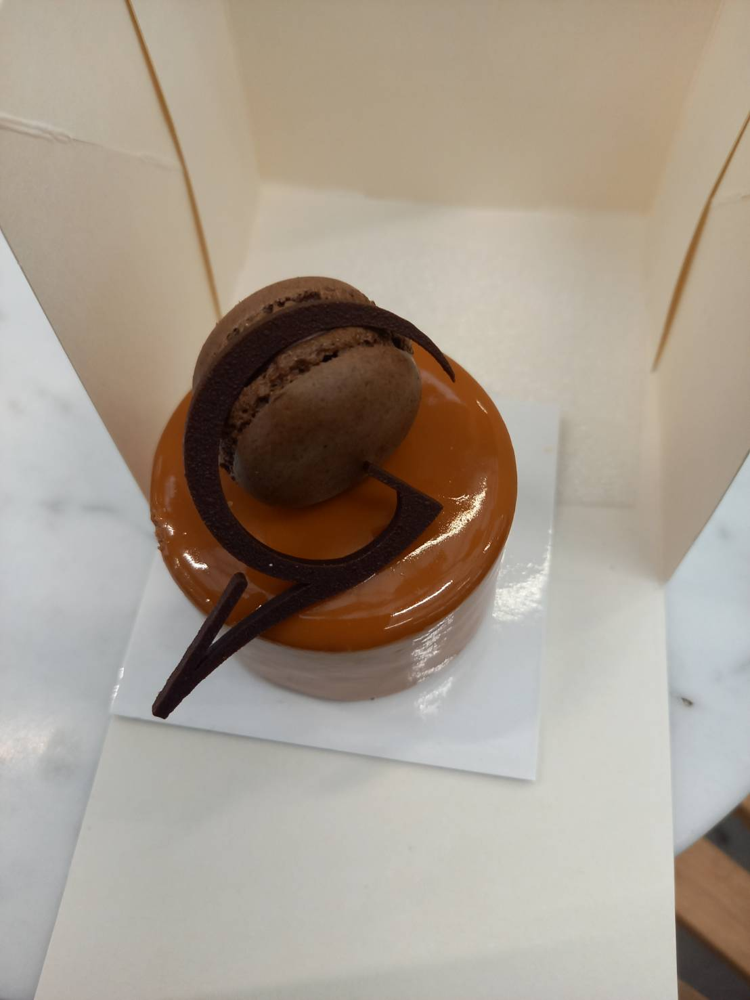
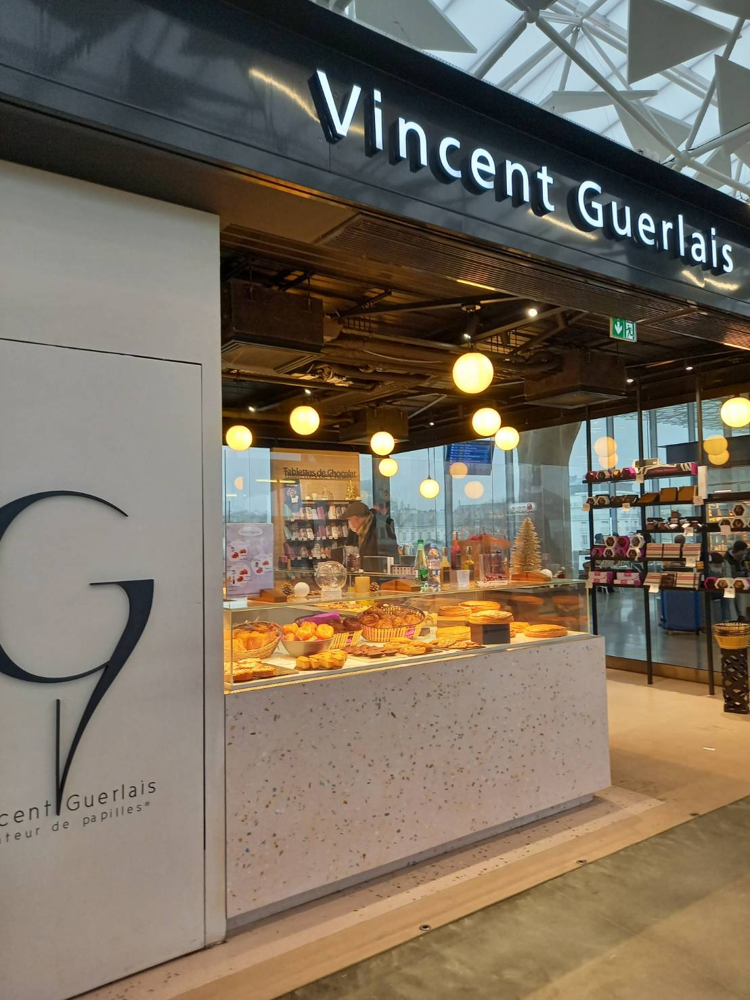

フランスでは、チョコ、ガトーなど様々な商品が販売されていましたが、日本ではビスキュイ（ビスケット）専門店として出展されているそうです！
フランスのバターと牛乳へのこだわりから最高級のビスケットを駅で味わえるなんて素敵ですね！
ぜひJR名古屋高島屋によった際には足を運んでみてください！
ちなみに、チョコがおいしすぎて電車を乗り過ごしそうになりました💦💦
今日はルレ・デセールについての紹介！
ルレ・デセール（Relais Desserts）は1981年フランスで設立されたパティシエのエリート集団のことです！
現在の会長はヴァンサン・ゲルレ氏です！
日本人のパティシエでは川口行彦氏、青木定治氏、金子美明氏、がいらっしゃいます！
問題:1981年に設立された、世界で活躍するトップパティシエ、ショコラティエで構成される組織はな～んだ？
答えはここに表示
チョコレート検定とは:チョコレートの主原料であるカカオの生態や製造法、チョコレートを取り巻くストーリーをまとめたテストです!